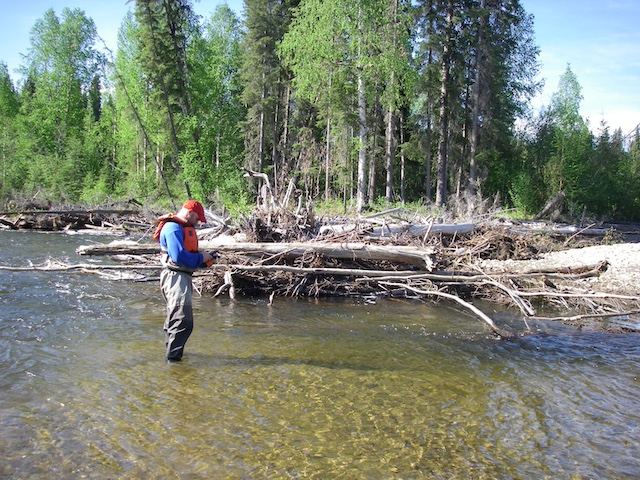

The applied ecological research program of the Freshwater Fish Ecology Laboratory focuses on the impacts of environmental stressors such as climate and land use change on fish population and assemblage dynamics to address aquatic conservation and management issues - primarily those identified by our cooperators as integral to carrying out the mission of their respective agencies. This work is complex, broad in scope, and has been conducted across a variety of freshwater and marine ecosystems in Alaska, the Pacific Northwest, the Great Plains, Nevada, and elsewhere. Projects are often multidisciplinary, include retrospective and forecasting analyses, and are carried out multiple spatial and temporal scales. Our diverse research program can be broadly categorized into three areas:
Landscape and spatial ecology of aquatic ecosystems: A spatially continuous perspective of aquatic ecosystems is needed to better understand the interactions between organisms and their environments. A portion of our research has focused on spatially-explicit prediction of the distribution of fish species and environmental stressors across broad landscapes. Recent applied efforts include mapping habitat suitability for life stages of species of concern across broad domains in the context of groundwater pumping, climate change, wildfire, and species invasions. Most individual projects include a combination of field and laboratory data collection and modeling. Examples of commonly used quantitative methods include: GIS, spatial statistical and mixed models, multi-state occupancy estimation, intrinsic potential/resource selection habitat models, bioenergetics modeling, and Bayesian networks.
Climate and land-use impacts on aquatic species and habitats: Climate variability is the overarching control on freshwater processes (e.g., stream flow and temperature), and sets the context for the distribution and abundance of aquatic species in riverscapes. We have contributed to recent meta-analyses of documented and projected climate impacts on inland fishes in North America and globally, synthesis to support the American Fisheries Society climate policy, and development of the “resist-accept-direct (RAD)” framework to assist decision makers make informed, purposeful, and strategic choices under ecosystem change; the approach has been adopted by DOI agencies across the country. These studies have answered important questions and captured the broad scope and complexity of this issue, and identified key data gaps.
Cooperator-driven science for fisheries management and conservation: Large data gaps exist for even basic information such as the distribution of, and interactions among, aquatic species across the Western U.S.; these gaps hinder management and conservation of commercially, culturally, and ecologically important fish species. An important part of our role is to be responsive to the research needs of our cooperators and a considerable portion of our research program has been to answer cooperator-defined questions regarding the biology and ecology of managed fish populations. Examples of methods used include biochronology, radio telemetry, resource selection functions, remotely sensing, histology, bioelectrical impedance analysis, genomic techniques, Bayesian networks, and laboratory flume experiments. The vast majority (>90%) of our labs conference presentations and peer-reviewed papers include agency scientists and managers as co-authors.
Publication philosophy: Our research goal is simple, to conduct the best research to date in the field, aimed at application by local and regional agencies that manage fishes and freshwater habitats, and to publish it in the best journals. As such, all graduate students and post-docs in the lab are expected to publish their research in peer-reviewed journals. We believe there is little point in doing research unless that work is published. Publishing your research has several functions: 1) it is an important learning experience for you that is best navigated with the assistance of an experienced coauthor (Jeff), 2) it serves as an unbiased, third party endorsement of the quality and validity of the work, and 3) it makes the findings of the research project readily available to a global audience. Further, peer-reviewed publications are an important indicator to prospective employers of your scientific capabilities and diligence.